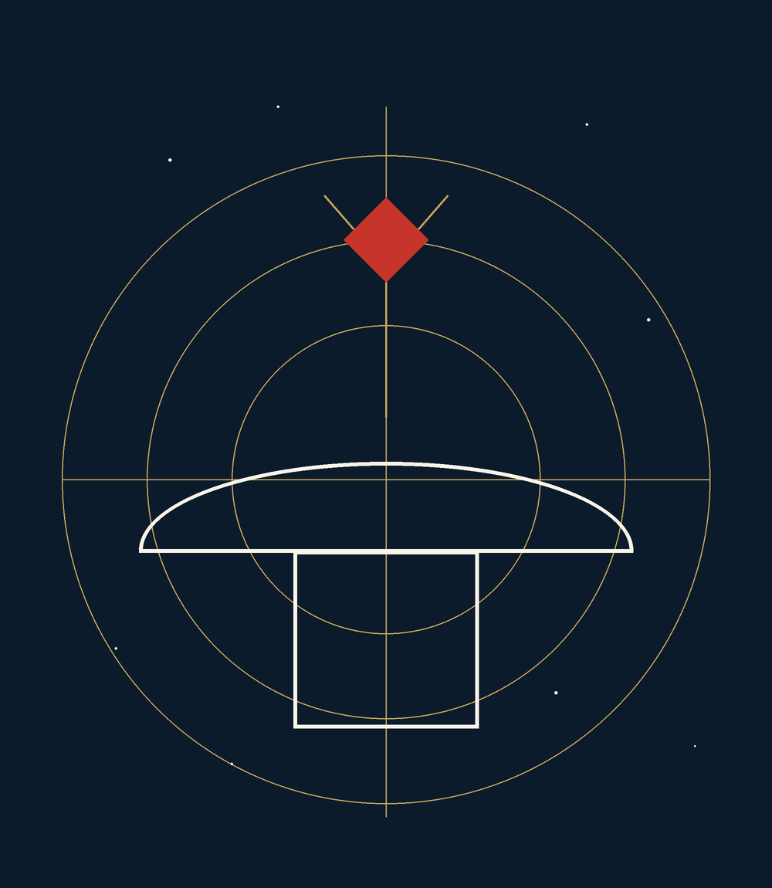

一座不在任何地图上的天文台。望远镜对着不该存在的星，门后传来十三声钟响。
黄铜圆顶坐落在没有名字的山丘上。推门进去，冷油和雨的气味一起涌出来。最后一位天文学家把望远镜对准了一颗从地球上不该看见的星。
这不是一座用来探索的地牢，而是一座让人抬头的陷阱。每个房间都在等特工做同一件事：往上看。
如果队伍坚持不抬头，就让影子先动。天文台不害怕被无视，它害怕被理解。

任何从望远镜里看星的人，掷 2D6 + CREATIVE。6 或更低时，星也看见了他。
| 楼层 | 现象 | 危险 |
|---|---|---|
| 圆顶 | 星座缓慢地朝房间中央移动 | 1 |
| 藏书室 | 书页在一夜之间被改写 | 2 |
| 钟表室 | 时间倒着走，门在数秒 | 3 |
| 地下室 | 星的倒影在水面上呼吸 | 4 |
演示文本为原创示例，仅用于验证版式与字体管线；不含任何已出版模组的正文或插图。